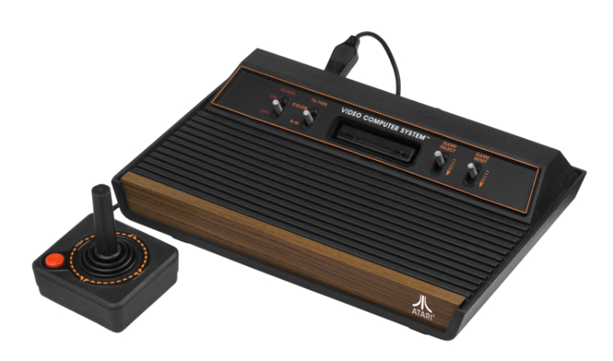
Atari 2600 (1977)
Lançado em 1977, o Atari 2600 é um dos primeiros consoles de videogame domésticos. Com gráficos simples e jogos icônicos como "Space Invaders" e "Pitfall!", ele popularizou os jogos eletrônicos e estabeleceu as bases para a indústria de videogames.
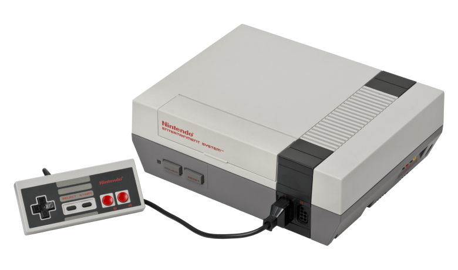
Nintendo Entertainment System (NES) (1983)
Lançado em 1983, o NES revitalizou a indústria de videogames após a crise de 1983. Com jogos clássicos como "Super Mario Bros." e "The Legend of Zelda", o NES estabeleceu a Nintendo como uma força dominante no mercado de jogos eletrônicos.
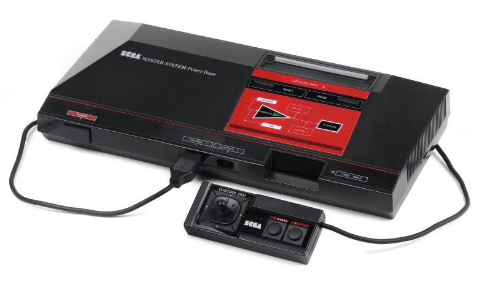
Sega Master System (1985)
Lançado em 1985, o Sega Master System foi o principal concorrente do NES. Com gráficos superiores e jogos populares como "Alex Kidd" e "Sonic the Hedgehog", o Master System ajudou a estabelecer a Sega como uma marca importante na indústria de videogames.
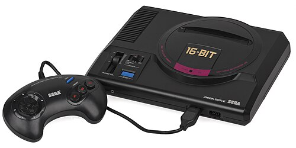
Sega Genesis (Mega Drive) (1988)
Lançado em 1988, o Sega Genesis, conhecido como Mega Drive fora da América do Norte, foi um console de 16 bits que competiu diretamente com o SNES. Com jogos populares como "Sonic the Hedgehog" e "Streets of Rage", o Genesis ajudou a solidificar a Sega como uma concorrente formidável no mercado de videogames.
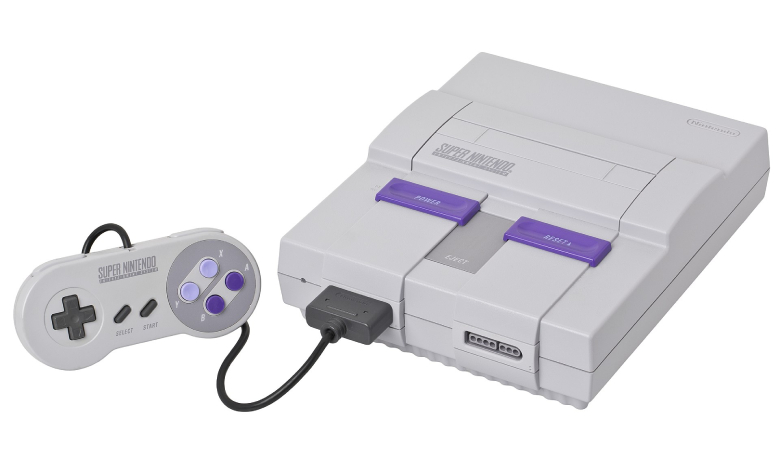
Super Nintendo Entertainment System (SNES) (1990)
Lançado em 1990, o SNES é conhecido por seus gráficos avançados e uma biblioteca de jogos lendários, incluindo "Super Mario World", "The Legend of Zelda: A Link to the Past" e "Street Fighter II". O SNES é amplamente considerado um dos melhores consoles de todos os tempos.
Os Primeiros Jogos
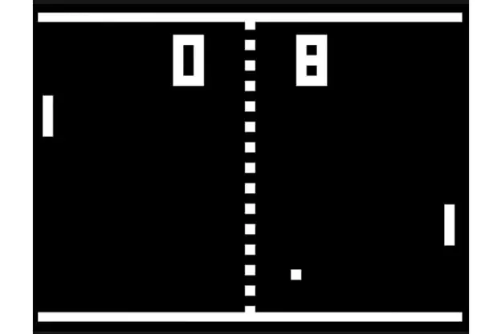
Pong (1972)
Lançado em 1972, Pong é um dos primeiros videogames da história. O jogo simula tênis de mesa, onde dois jogadores movem barras para rebater uma bola, competindo para marcar pontos. Simples, viciante e essencial na história dos jogos eletrônicos.

Space Invaders (1978)
Um clássico de 1978, Space Invaders coloca o jogador no comando de uma nave que deve atirar e destruir hordas de alienígenas que descem lentamente pelo espaço. É um dos jogos pioneiros de tiro e ação, marcando a era de ouro dos arcades.
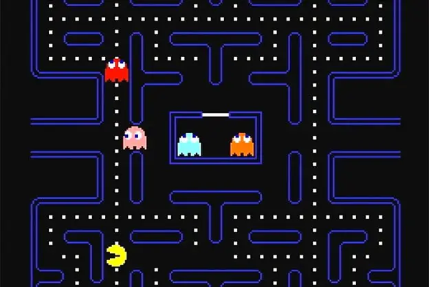
Pac-man (1980)
Pac-Man é um clássico jogo de arcade lançado em 1980, onde o jogador controla o personagem Pac-Man em labirintos, comendo todas as bolinhas enquanto evita os fantasmas. Comer frutas especiais e bolinhas grandes dá pontos extras e permite que Pac-Man devore os fantasmas temporariamente. Um verdadeiro ícone da cultura gamer e diversão retrô.
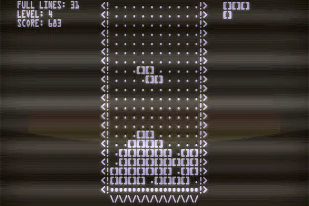
Tetris (1984)
Lançado em 1984, Tetris é um jogo de quebra-cabeça onde o jogador deve encaixar peças de diferentes formas que caem do topo da tela. O objetivo é completar linhas horizontais sem deixar espaços vazios, o que faz as linhas desaparecerem e aumenta a pontuação. Simples, viciante e desafiador, Tetris é um dos jogos mais populares e influentes de todos os tempos.

Super Mario Bros (1985)
Lançado em 1985, Super Mario Bros é um jogo de plataforma onde o jogador controla Mario em sua missão para resgatar a Princesa Peach do vilão Bowser. Com níveis variados, power-ups e inimigos desafiadores, o jogo é conhecido por sua jogabilidade fluida e design inovador, tornando-se um dos jogos mais icônicos e influentes da história dos videogames.
Curiosidade & Notícias
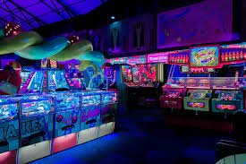
O Retorno dos Arcades
Nos últimos anos, os arcades têm visto um ressurgimento, com novos estabelecimentos abrindo em várias cidades ao redor do mundo. Esses locais oferecem uma experiência nostálgica, combinando jogos clássicos com novas tecnologias, atraindo tanto jogadores antigos quanto novos.
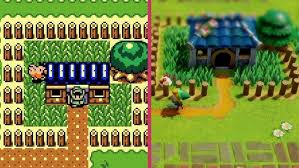
Remakes e Remasters
Muitos jogos retro estão sendo remasterizados ou refeitos para plataformas modernas. Títulos como "The Legend of Zelda: Link's Awakening" e "Final Fantasy VII Remake" trazem gráficos atualizados e jogabilidade aprimorada, permitindo que novas gerações experimentem esses clássicos.
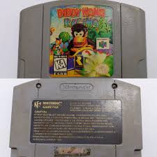
Preservação de Jogos Antigos
Organizações e comunidades dedicadas à preservação de jogos antigos estão ganhando destaque. Elas trabalham para arquivar e manter o acesso a jogos que poderiam ser perdidos devido à obsolescência tecnológica, garantindo que a história dos videogames seja preservada para o futuro.
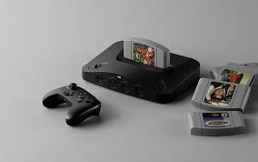
Chegada do Analogue 3D (Console tipo N64 moderno)
O Analogue 3D, console retro que reproduz fielmente o Nintendo 64 com tecnologia FPGA, compatível com cartuchos originais, saída em 4K e suporte a Bluetooth, viu seu lançamento adiado para julho/agosto de 2025 devido a arancelas. É uma esperada opção premium para fãs do retrô
Inscreva-se!
Receba as últimas notícias e atualizações sobre a comunidade de jogos retro diretamente no seu e-mail!